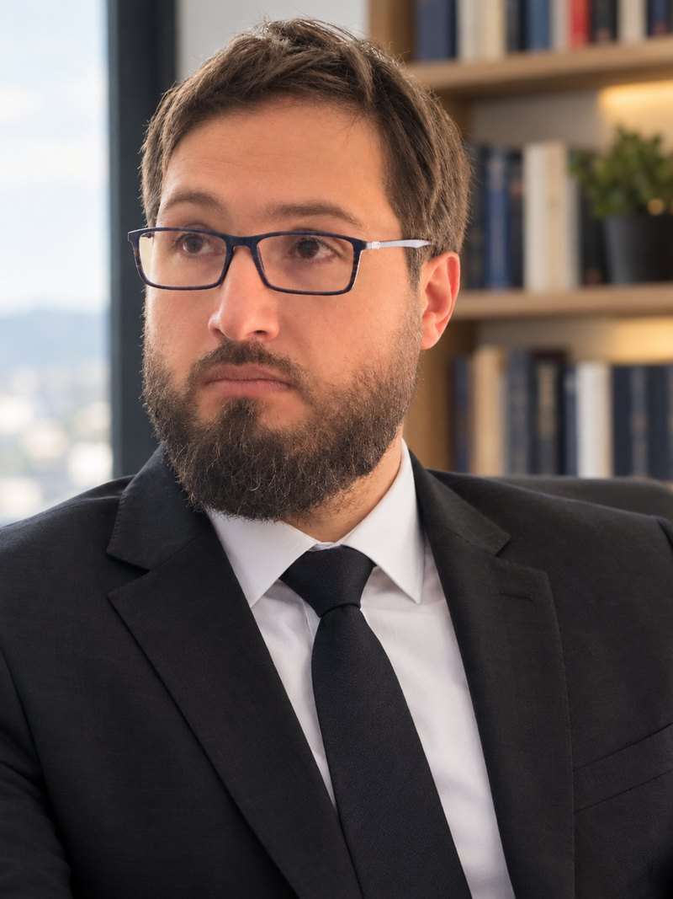
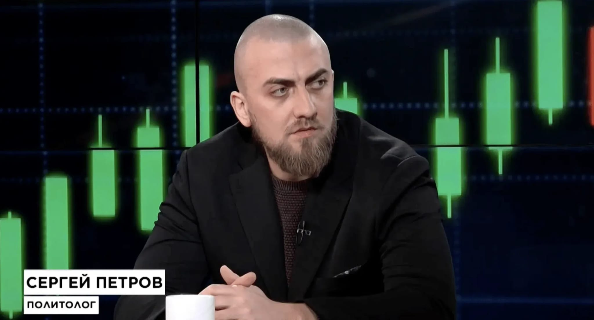
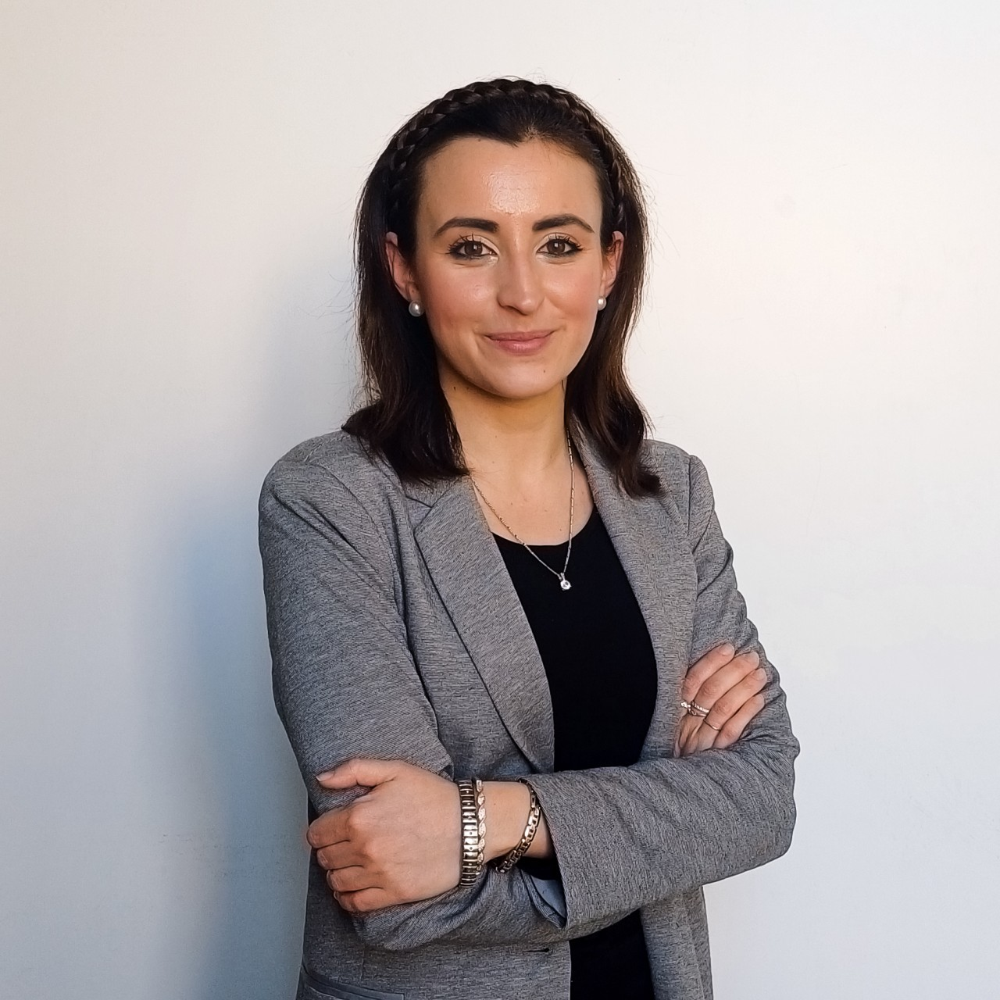

От изследванията към практиката
Изграждане на кариера в политиките и международните отношения
UP × Посолство на Косово в София × БИМП
Предстоящ уъркшоп
Кариерен уъркшоп за студенти и випускници за изграждането на кариера в политиките и международните отношения: мозъчни тръстове, комуникации, медии и публични дейности. Двама лектори в Прищина, двама онлайн, един следобед.
Регистрация ↗Регистрацията е на уебсайта на уъркшопа.
Програма
12:00 – 15:45 косовско време (CET). На английски език.
- 12:00Международният политически ландшафтОсновен докладПрисъствено
Кариерни пътеки в политическите изследвания, как всъщност работят мозъчните тръстове, входни точки в сферата, публикуване и езикът като професионален актив.
Водещ: д-р Димитър Керанов, БИМП
- 12:55Критичен разбор на политически доклад (Policy Brief)Присъствено
- 13:35Почивка
- 13:45Личен бранд в политическото пространствоОнлайн
- 14:15Кариери в комуникациите и институционалните отношенияПрисъствено
- 14:45Политика, медии и трансгранично предприемачествоОнлайн
- 15:15Общи въпроси и отговори
Четирима практици, в залата и онлайн



Какво получават участниците
- Разбиране как мозъчните тръстове превръщат изследванията в политическа работа
- Критичен разбор на политически доклад и подобряване на препоръките му
- Изграждане на достоверен публичен профил като политически анализатор
- Проучване на кариери в пресслужби, работа със заинтересовани страни и публични дейности
- Свързване на политиката и комуникацията с гражданското общество, партньорствата и социалното въздействие
- Възможност да зададете кариерните си въпроси на четирима професионалисти от БИМП, присъствено и онлайн
Къде
Център за кариерно развитие, Университет на Прищина
Национална библиотека на Косово „Pjetër Bogdani“, 1-ви етаж, Прищина
- Университет на Прищина — Център за кариерно развитие
- Посолство на Република Косово в София
- Български институт за международна политика